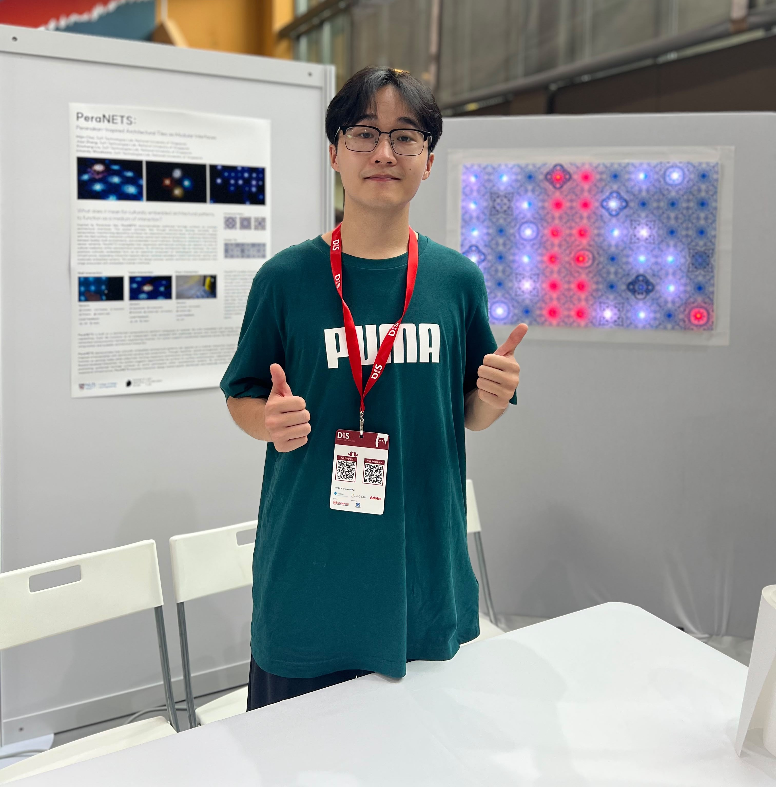
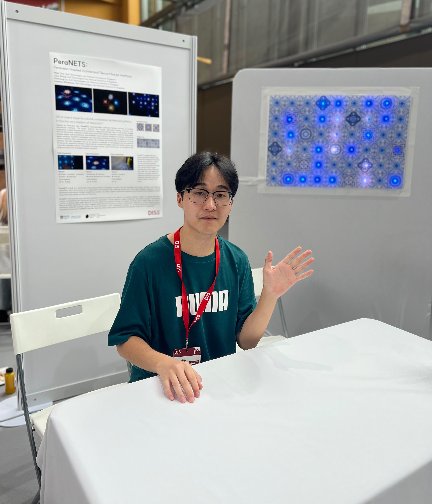

Hi, I'm Liu Xinchang, but you can call me Leo!
I'm a Product & Interaction Designer based in Singapore, exploring new forms of physical interaction through materials, computation, and fabrication.
I enjoy turning ideas into working prototypes, bringing together emerging materials, physical computing, and computational fabrication. My process often starts with a simple question, followed by hands-on experimentation, making, testing, and plenty of iteration.
Outside of design and research, I enjoy running 🏃 and playing the guitar 🎸. I'm always happy to connect, exchange ideas, and explore opportunities for future collaboration — whether it's about design, research, or anything beyond!


Highlighted Work


Publications
Interaction Design & HCI
About
Modeling — Rhino, Blender, SolidWorks
Rendering — KeyShot
Adobe — Ps, Ai, Pr, Id, XD
Fabrication — 3D printing, laser cutting
National University of Singapore — Research Master, Industrial Design
Soft Technology Lab, College of Design and Engineering · 2025 – 2027
Hunan University of Technology — B.Des. Product Design
2020 – 2024
Previously interned in interior design at Neta and as a curator intern at China Textile Publishing House.